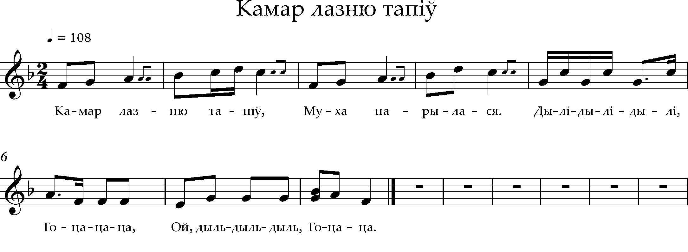
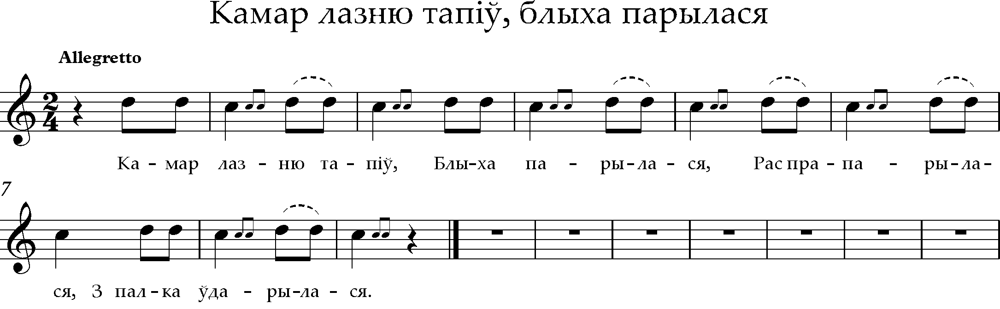
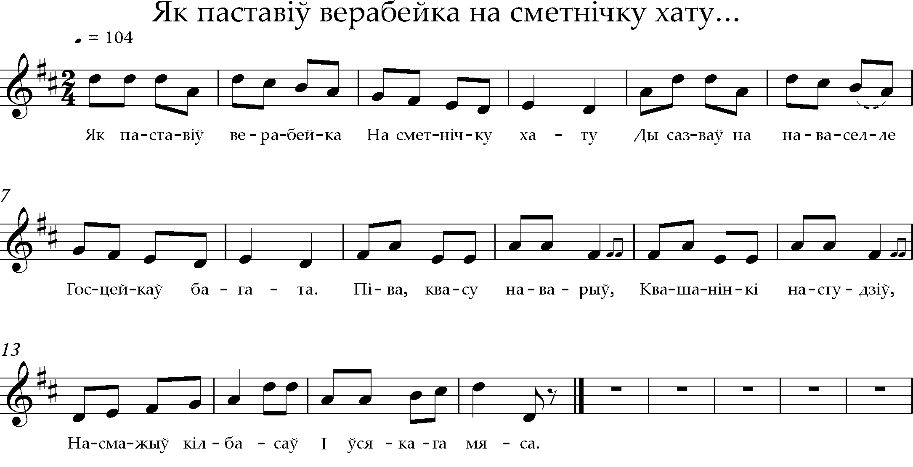

Песні
Камар лазню тапіў
 MIDI{kind=link}
Камар лазню тапіў, Муха парылася. - Прыпеў: Дылі-дылі-дылі, Го-ца-ца-ца, Ой, дыль-дыль-дыль, Го-ца-ца.* - Ды з палка звалілася І на смерць забілася. - Едзе жук да папа, Да запечнага клапа. - А поп часу не мае, Прусака спавядае. - Прэ блаха на мышы, Ужо муха без душы. - Пакуль муху памылі, Пук лучыны спалілі. - Пакуль муху прыбралі, Певуны запяялі. - Зайцы яму капалі, Лісы труну збівалі. - Совы муху няслі, Ваўкі голас вялі. - У пясочку хавалі І памінкі спраўлялі. - Вылі ўсе, галасілі, Выпілі, закусілі.
* Прыпеў паўтараецца пасля кожнай страфы
Камар лазню тапіў, блыха парылася
 MIDI{kind=link}
Камар лазню тапіў, Блыха парылася, Распрапарылася, З палка ўдарылася. - Ай, бяжы па папа, Па запечнага клапа. Няхай поп прыбяжыць, [Няхай поп пачадзіць]. - [Няхай поп прыбяжыць, Вугалём пачадзіць], Запісачку прачытае, Ўпакойнічка адпявае. - Жучкі Яначку качаюць, Яны блошку зарываюць. Ой, ду-ду, ду-ду, ду-ду! Сядзіць жораў на дубу. - Прыляцела сінічка, Вераб’ёва сястрычка. Каго будзеш жаніці? Васіля папова. - А Васіль, Васілёк, Пабяжы-ка у лясок, Адсячы даўбню, Удар бабу па (і)лбу. - Няхай баба коціцца, У балоце топіцца. А ў балоце гусі, Ляці да Марусі. - А ў Марусі галкі, Смаляныя лаўкі: Як сеў-прыкіпеў, Дык абедаць не хацеў. - Адчыняйце варата, Едзе пан сірата Без сарочкі, без штаноў, Поўна торба сухароў.
Як паставіў верабейка на сметнічку хату…
 MIDI{kind=link}
Як паставіў верабейка На сметнічку хату Ды сазваў на наваселле Госцейкаў багата. - Піва, квасу наварыў, Квашанінкі настудзіў, Насмажыў кілбасаў І ўсякага мяса. - Ў залачонай карэце Дзяцел пад’язджае, А за дзятлам на валах Жоўна паспяшае. - А зязюля з шуляком, Перапёліца з круком Лугам, даліною Шпараць пехатою. - Заклікае верабейка Ўсіх госцейкаў есці, Запрашае белу лебедзь На покуце сесці. - А з лебеддзю – жураўля, І савішчу, і луня, І стару чачотку, Сваю родну цётку. - Сядзіць мядзведзь на калодзе, На скрыпачцы йграіць, Дзіцяняты-медзвядзяты Струны напраўляюць; - Як зайгралі “дылі-дылі”, Госці у далоні білі, - Адзін дзіваваўся, А другі смяяўся. - Шчыгел важна пахаджае, Цаплю ў танец просіць, Галка піва налівае, А удод разносіць. - За здароў’е вераб’я Пілі, елі аж да дня, А бацян упіўся Ды пад стол зваліўся.